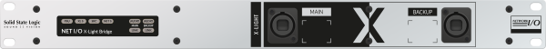

Stageboxes
A range of stageboxes is available for use with SSL Live consoles over either MADI or Dante. Once the stageboxes have been configured on the console, the workflow for controlling the mic gain and other parameters is the same for both MADI and Dante stageboxes.
All SSL Stageboxes feature dual redundant power supplies.
MADI Stageboxes
MADI Stageboxes connect to SSL Live consoles via BNC, or via a BLII-MADI Concentrator (see below).
Up to 3 SSL Live consoles can share stageboxes with gain compensation being applied to the two slave consoles. See the Gain Sharing section for further details.
ML 32.32

The 5U ML 32.32 analogue stagebox is fitted with 32 remote controlled SSL SuperAnalogueTM mic/line inputs and 32 line outputs on the front panel.
A/D D/A conversion takes place within the stagebox and the standard unit has two pairs of coaxial MADI In/Out configured as a redundant pair on the rear panel.
There is also an optional rear-mounting panel for 32 split analogue mic outputs, which are derived before the active electronics of the mic/line amps (but after phantom power injection).
There are sample rate and clock setup buttons and a pair of dedicated wordclock connections. MIDI and GPIO connections are also supplied for alternative remote control methods.
Alternative options are available loaded with only 32 front panel input connections or 32 output connections.
D 32.32

The D 32.32 is a 2U digital stagebox providing 16 x AES/EBU pairs of front panel XLR connectors. Sample rate conversion is available for all AES/EBU connections.
The D 32.32 rear panel features exactly the same connectivity as the analogue stagebox with redundant coaxial MADI I/O, MADI output to a second console, setup controls and remote control connectivity.
BLII-MADI Concentrator

This 2U unit is used for efficient cable connection between MADI stageboxes and an SSL Live console.
The BLII-MADI Concentrator features a redundant pair of SSL's proprietary Blacklight II connectors on the front panel and each connection carries 256 channels of audio at 96 kHz.
The rear panel of the unit provides 8 redundant pairs of coaxial MADI connectors.
Network I/O (Dante) Stageboxes
SSL's Network I/O stageboxes connect to SSL Live consoles using a Dante network. All Network I/O units support the AES67 and SMPTE 2110-30 AoIP network transport standards.
Gain compensation is performed within the stageboxes themselves, meaning any Dante device can receive gain compensated signals, it does not have to be an SSL device. See the Gain Sharing section for further details.
SB 32.24

The SB 32.24 is a 5U stagebox featuring 32 mic/line inputs, 16 analogue line outputs and 8 digital inputs and outputs on 4 AES/EBU input/output pairs.
It has a pair of redundant RJ45 Dante network connections (Network A), for connection to the main Dante network. In addition, a pair of redundant user-configurable SFP ports (Network B), that can be fitted with RJ45 or fibre connectors, provide gain-compensated split outputs. These SFP ports can be used in linked mode to make both main (uncompensated) and compensated channels available on a single network, or in unlinked mode to keep the gain compensated signal on a separate network. A sample rate converter (SRC) on the Network B interface can be enabled to operate Network B at a different sample rate or clock domain to the main Dante interface.
SB 16.12

The SB 16.12 is a 3U stagebox featuring 16 mic/line inputs, 8 analogue line outputs and 4 digital inputs and outputs on 2 AES/EBU input/output pairs.
Its other features are identical to the SB 32.24 above.
SB 8.8 & i16


These 2RU units offer slightly different configurations but share identical features. The SB 8.8 offers 8 mic/line inputs and 8 line level outputs. The SB i16 offers 16 mic/ line inputs.
Both models feature a pair of redundant RJ45 Dante network connections, a pair of network extension connections and GPIO connectivity.
The SB 8.8 & i16 feature inbuilt limiters and SSL's innovative AutoPad system that automatically applies a Pad according to gain setting.
The AutoPad is applied if the gain is set at a low value that would require a pad to achieve making the entire possible mic gain range seamlessly available at all times.
An Audition feature allows individual channels to be monitored over the network (using an SSL console or App) without the signal actually being routed to a network destination.
X-Light Bridge

The Network I/O X-Light Bridge is a 1U unit that provides a bi-directional bridge between SSL Live consoles and a Dante network of stageboxes. The X-Light Bridge delivers 256 channels of ultra low latency 96 kHz audio in and out of a Dante network. It features ruggedised connections and is intended for touring use.
Since SSL Live consoles' Local I/O is limited to 32 x 32 Dante I/O at 96 kHz (64 x 64 at 48 kHz), the X-Light Bridge can be used to expand the console's Dante I/O capability by a further to 256 x 256 channels.
BLII Bridge

The Network I/O BLII Bridge is a 1U unit that provides a bi-directional bridge between SSL Live consoles and a Dante network of stageboxes. The BLII Bridge delivers 256 channels of ultra low latency 96 kHz audio in and out of a Dante network. It features non-ruggedised connections and is intended for install use.
Since SSL Live consoles' Local I/O is limited to 32 x 32 Dante I/O at 96 kHz (64 x 64 at 48 kHz), the BLII Bridge can be used to expand the console's Dante I/O capability by a further to 256 x 256 channels.
Other Dante Stageboxes
These stageboxes do not carry the full feature set of the Network I/O range, but still connect to SSL Live consoles in the same way.MPL 16-8
The MPL 16-8 is a 2U stagebox featuring 16 mic/line inputs and 8 analogue line outputs.
It has a pair of redundant RJ45 Dante network connections, and supports the AES67 transport standard.

The MPL 16-8 does not feature input ownership, PSU redundancy or ST 2110.